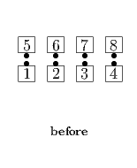
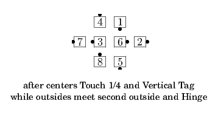
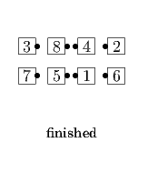

From Facing Lines or other applicable formations: Centers Touch 1/4, Cross Concentric Vertical Tag the Line, the Leaders Peel Left and the Trailers Peel Right to end as couples facing in (as in Sets In Motion). Outsides move forward around the outside, passing right shoulders with the first other Outside dancer, and taking right hands with the second; they then Hinge and Cross Concentric Vertical 1/2 Tag into the center, and Face In. Facing Lines ends in a Double Pass Thru.
  
© Copyright 2004-2017 Vic Ceder and CALLERLAB Inc., The International Association of Square Dance Callers. Permission to reprint, republish, and create derivative works without royalty is hereby granted, provided this notice appears. Publication on the Internet of derivative works without royalty is hereby granted provided this notice appears. Permission to quote parts or all of this document without royalty is hereby granted, provided this notice is included. Information contained herein shall not be changed nor revised in any derivation or publication.